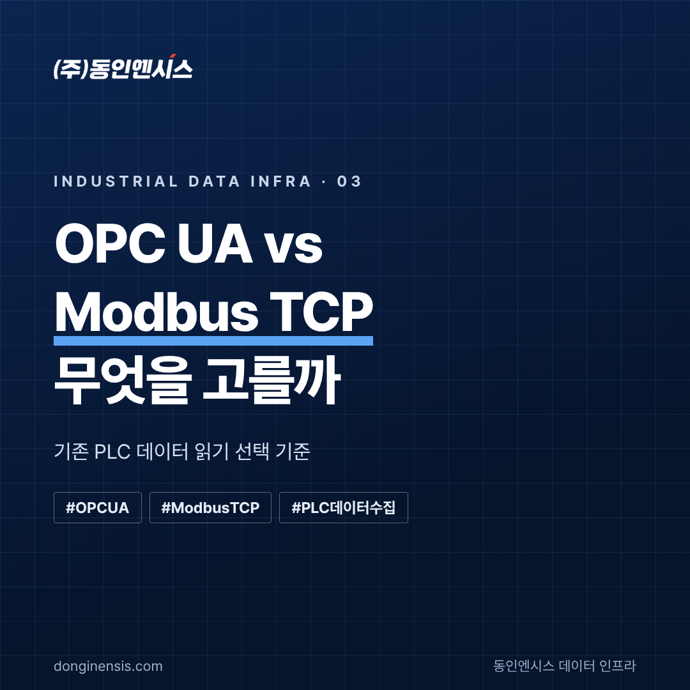
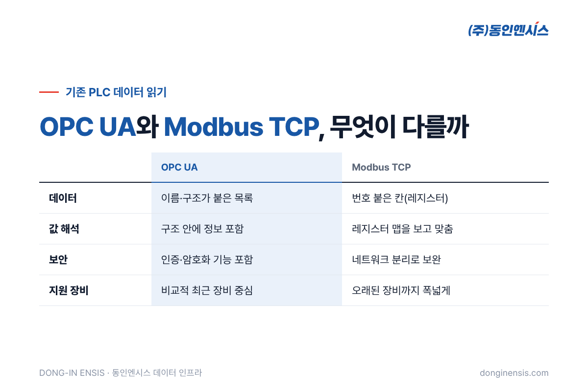
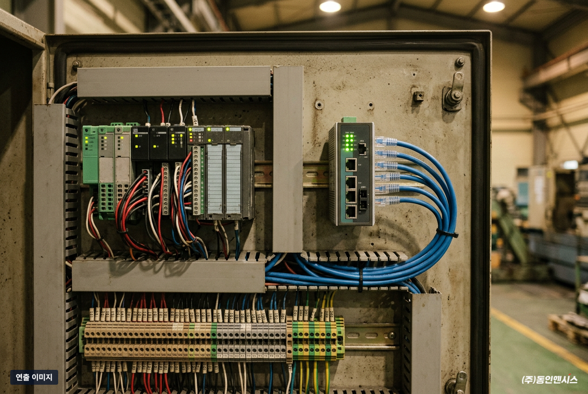
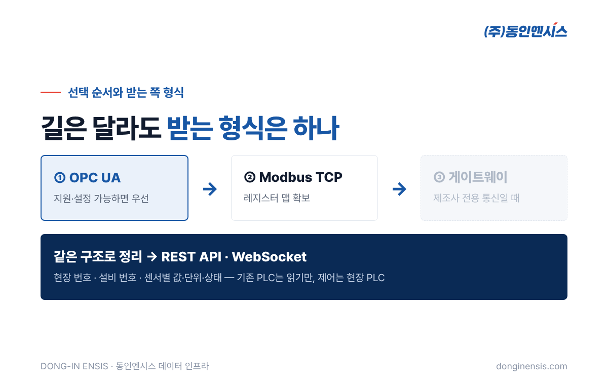
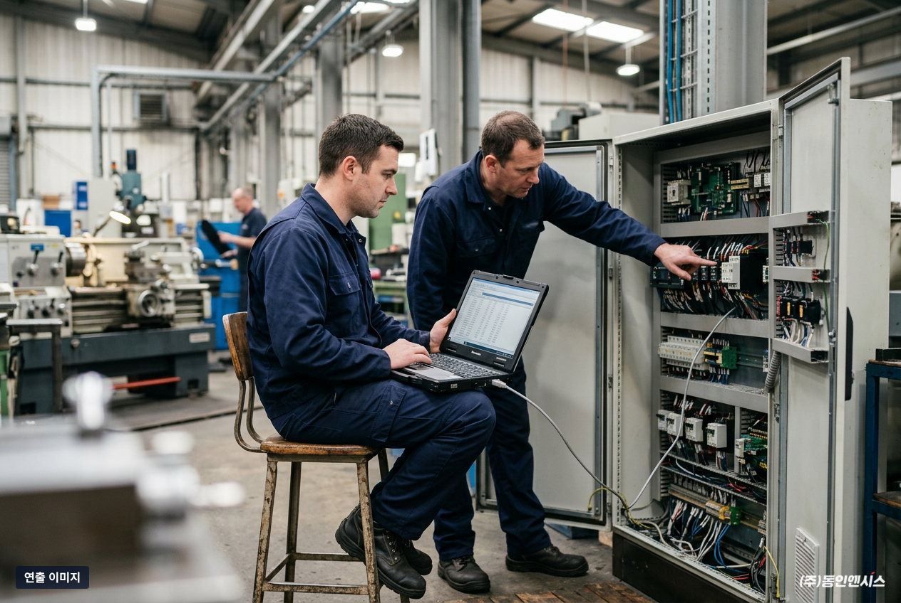

공장에 이미 다른 회사 PLC가 돌고 있을 때, 설비 데이터를 어떤 통신으로 읽어 올지는 연동 프로젝트의 첫 갈림길입니다. 이 글에서는 750건이 넘는 제어반 프로젝트를 해 온 동인엔시스가 기존 PLC 데이터를 읽을 때 가장 많이 비교하는 OPC UA와 Modbus TCP의 차이와 선택 기준을 정리했습니다. MES·AI 플랫폼을 만드는 IT기업 담당자분이 현장 엔지니어와 이야기할 때 참고하기 좋게 썼습니다.
통신 방식을 비교하기 전에 짚어 둘 원칙이 있습니다. 이미 설비를 잘 제어하고 있는 PLC의 프로그램은 건드리지 않고, 데이터를 읽어 오기만 한다는 것입니다.
이유는 단순합니다. 데이터를 가져오려다 제어 로직이 흔들리면 생산이 멈출 수 있기 때문입니다. 안전 인터록과 최종 제어는 계속 현장 PLC가 맡고, 데이터를 받는 서버는 설비를 움직이지 않습니다. 제어망과 데이터망을 나눠 두는 것도 같은 이유입니다.
이 원칙 아래에서 "어떤 길로 읽어 올 것인가"를 고르는 것이 이번 글의 주제입니다.
두 방식 모두 기존 PLC에서 값을 읽어 오는 데 널리 쓰이지만, 데이터를 다루는 방식이 꽤 다릅니다.
OPC UA는 산업 장비끼리 데이터를 주고받기 위해 만든 표준 통신입니다. 가장 큰 특징은 데이터에 이름과 구조가 붙어 있다는 점입니다.
예를 들어 OPC UA로 PLC에 접속하면 "1호 펌프 → 모터 → 권선온도"처럼 정리된 목록을 따라가며 값을 찾을 수 있습니다. 값의 단위나 형식 같은 정보도 함께 다룰 수 있어, 받는 쪽에서 "이 숫자가 무엇인지"를 따로 맞추는 수고가 줄어듭니다. 인증과 암호화 같은 보안 기능도 표준 안에 들어 있습니다.
대신 PLC나 장비가 OPC UA를 지원해야 하고, 지원하더라도 서버 기능을 켜고 공개할 데이터를 설정하는 작업이 필요합니다. 오래된 장비일수록 지원하지 않는 경우가 많습니다.
Modbus는 오래전부터 쓰여 온 산업 통신이고, Modbus TCP는 이를 이더넷 위에서 쓰는 방식입니다. 구조가 단순하고 지원하는 장비가 아주 많다는 것이 강점입니다.
Modbus는 데이터를 번호가 붙은 칸(레지스터)에 담아 주고받습니다. 예를 들어 "40001번 칸 = 1호 펌프 권선온도"처럼, 어느 칸에 어떤 값이 들어 있는지 적은 목록(레지스터 맵)이 있어야 값을 해석할 수 있습니다. 단위와 소수점 위치도 이 목록을 보고 맞춰야 합니다.
표준 자체에는 암호화 같은 보안 기능이 없기 때문에, 네트워크를 나누고 접근을 제한하는 방식으로 보완해야 합니다.

| 비교 항목 | OPC UA | Modbus TCP |
|---|---|---|
| 데이터 형태 | 이름·구조가 붙은 목록 | 번호 붙은 칸(레지스터) |
| 값 해석 | 구조 안에 정보 포함 | 레지스터 맵을 보고 직접 맞춤 |
| 보안 | 인증·암호화 기능 포함 | 네트워크 분리 등으로 보완 |
| 지원 장비 | 비교적 최근 장비 중심 | 오래된 장비까지 폭넓게 |
| 준비 작업 | 서버 기능 설정, 공개 항목 지정 | 레지스터 맵 확보·확인 |
OPC UA와 Modbus TCP 중 어느 쪽이 늘 낫다기보다, 현장에 무엇이 준비돼 있느냐에 따라 답이 달라집니다. 같은 공장 안에서도 설비마다 다른 방식을 쓰는 경우가 흔합니다.
동인엔시스는 기존 PLC가 있는 현장에서 아래 순서로 방법을 정합니다.
세 번째 길은 장비가 하나 늘어나는 만큼 관리 부담도 늘어납니다. 그래서 가능한 한 앞의 두 방법으로 해결하고, 새로 설치하는 설비는 처음부터 지능형 제어반으로 구성해 별도 장비 없이 데이터를 보내도록 권합니다.

IT기업 입장에서 더 중요한 것은 사실 이 다음입니다. 현장마다 OPC UA, Modbus TCP, 게이트웨이가 섞여 있으면 받는 쪽 코드도 현장마다 달라지기 쉽습니다.
그래서 동인엔시스는 현장에서 어떤 길로 읽어 왔든, 플랫폼으로 넘길 때는 같은 형식으로 정리합니다. 설비마다 현장 번호와 설비 번호를 붙이고, 센서마다 값·단위·상태를 같은 구조로 담습니다. 받는 쪽은 REST API와 WebSocket으로 이 데이터를 받기 때문에, 현장의 통신 방식이 달라도 연동 코드를 새로 짤 필요가 없습니다.

기존 PLC 데이터를 읽는 프로젝트라면, 첫 미팅에서 아래를 확인해 두면 방법을 빨리 정할 수 있습니다.
문서가 없는 현장도 많습니다. 그럴 때는 현장 분석에서 PLC 담당자와 함께 필요한 값을 하나씩 확인합니다.

Q. MQTT는 어디에 해당하나요? MQTT는 주로 현장에서 서버나 클라우드로 데이터를 보낼 때 쓰는 통신입니다. 기존 PLC에서 값을 읽는 OPC UA·Modbus TCP와는 역할이 다르고, 두 방식을 함께 쓰는 경우가 많습니다.
Q. Modbus RTU만 지원하는 장비도 있나요? 있습니다. 직렬 통신인 Modbus RTU도 지원하므로, 현장 장비에 맞춰 연결 방법을 정합니다.
Q. 읽기만 한다면 PLC 담당 업체의 동의가 필요할까요? 권장합니다. 통신 설정을 바꾸는 작업이 생길 수 있어, 기존 PLC를 관리하는 쪽과 미리 협의하면 일이 훨씬 매끄럽습니다.
OPC UA는 정돈된 구조와 보안, Modbus TCP는 폭넓은 호환성이 강점입니다. 현장에 무엇이 있는지 확인하고 그에 맞는 길을 고르는 것이 가장 빠른 방법입니다.
1991년부터 제어반을 만들어 온 동인엔시스는 Schneider Electric 공식 SI 파트너로서 이런 OT 구간 연결을 맡고 있습니다. 기존 설비 데이터 연동이 필요한 프로젝트가 있다면 IT기업 협업 페이지에서 문의해 주세요.
기술 상담 051-862-3668 · dongin@donginmne.com
아래 질문 중 하나에 실제 경험으로 답해 본문 적당한 곳에 넣어 주세요. 사람이 직접 쓴 문장이 들어가면 네이버에서 저품질 위험이 줄고 노출에 도움이 됩니다.